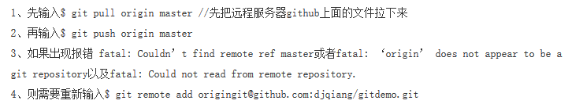
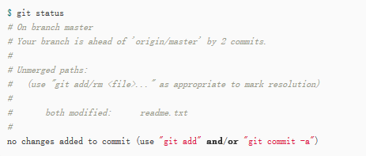
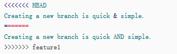

git简明教程2
Git是一款免费、开源的分布式版本控制系统，用于敏捷高效的处理任何或大或小的项目。下面介绍几种分支的使用步骤，其实都大同小异。
目录
master分支(主分支)
新仓库默认的分支就只有master。
dev分支(开发分支)/分支管理
开发过程中我们每个人都可以创建属于自己的分支，个干个的活，别人看不到，提交到总分支上后每个人到可以看到，有利于整个项目的开发。下面是使用开发分支的具体步骤：1
2
3
4
5
6
7$ git checkout -b <name> 创建并切换分支
$ git branch 查看分支
$ git add file， $ git commit -m "file" 提交文件到当前分支
$ git checkout <name> 切换分支
$ git merge <name> 合并某分支到当前分支(切换到master分支后，把其他分支的合并到master分支)
$ git branch -d <name> 删除分支
在远程库delete分支
拓展:$ git branch <name>创建分支 $ git push origin <name>推送到远程name分支上$ git log --graph可以看到分支合并图。$ git merge --no-ff -m "merge with no-ff" <name>合并某分支到当前分支，–no-ff参数表示用普通模式合并，合并后的历史有分支，能看出来曾经做过合并，而fast forward合并看不出曾经做过合并。$ git push origin master提示出错信息：error:failed to push som refs to ……的解决办法:

Bug分支(issue-101)
bug分支只用于在本地修复bug。当你手头有bug却急需提交任务时，可以先用$ git stash把当前工作现场“储藏”起来，新建一个issue-101的临时分支来修复，修复后合并分支，并将临时分支删除，下面是详细的步骤：1
2
3
4
5
6
7
8
9$ git stash
$ git checkout master 切换分支到master(假定bug在master分支上)
$ git checkout -b issue-101 创建并切换到issue-101分支
修复bug,然后$ git add file，$ git commit -m "bug 101"
$ git checkout master 修复完成后，切换到master分支
$ git merge --no-ff -m "merged bug 101" issue-101 合并分支
$ git branch -d issue-101 删除issue-101分支
在远程库delete分支
$ git status 查看修改，证明工作区是没bug的
拓展:$ git stash list查看工作现场 $ git stash pop回到工作现场
可以有多个srash,$ git stash apply stash@{0}回到指定的stash
Feature分支
当想添加一个新功能时，你肯定不希望因为一些实验性质的代码，把主分支搞乱了，所以，每添加一个新功能，最好新建一个feature分支，在上面开发，完成后合并，最后删除该feature分支，具体步骤同“dev分支(开发分支)”，(分支名改成feature)。
拓展:feature分支合并前想删除，就要使用$ git branch -D feature进行强行删除。
冲突处理
当两条分支对同一个文件的同一个文本块进行了不同的修改，并试图合并时，Git不能自动合并的，称之为冲突(conflict)。解决冲突需要人工处理。$ git status告诉我们产生冲突的文件，如图所示:

找到冲突的文件，Git用<<<<<<< HEAD，=======，>>>>>>> branch-name标记出了不同分支的内容:

手动修改后，像往常的提交一样先add，commit，再push即可完成合并。
多人协作
- json
1 | 首先，可以试图用 $ git push origin <name>推送自己的修改； |
拓展:如果$ git pull提示“no tracking information”，则说明本地分支和远程分支的链接关系没有创建，用命令$ git branch --set-upstream branch-name origin/branch-name建立本地分支和远程分支的关联。
查看远程库信息，使用$ git remote -v。
标签管理
- json
1 | $ git checkout master 切换到master分支上 |